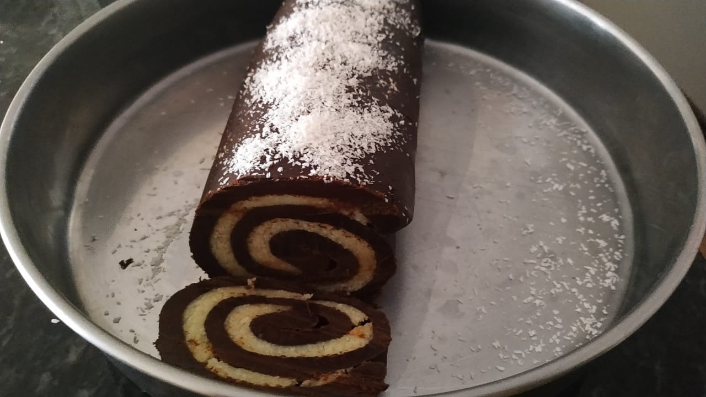

Chocolate Coconut Rocambole

Description
This one is great, although very sweet and dense.
The process of preparing it is not hard, but it is work intensive. Lets do this!
Ingredients
Dough
- 1 can of sweetened condensed milk.
- 1 can of cocoa powder.(Use the condensed milk can)
- 1 can of powdered milk.(Use the condensed milk can)
Filling
- 1 can of sweetened condensed milk.
- 100 grams of grated coconut.
Steps
Dough
- Pour all the ingredients into a bowl and mix them until they become a firm dough.
- Keep kneading the dough until it becomes homogenous and shiny.
- Shape the dough into a cylinder and spread it with a rolling pin.
Filling
- Pour all the ingredients into a pan and cook them in low heat
- Keep stirring it until it thickens.
- Spread the lukewarm filling on the dough.
- Roll the dough on itself with the filling on the inside
- Allow it to cool on the fridge for at least 2 hours and chop it into slices.
Return to main page